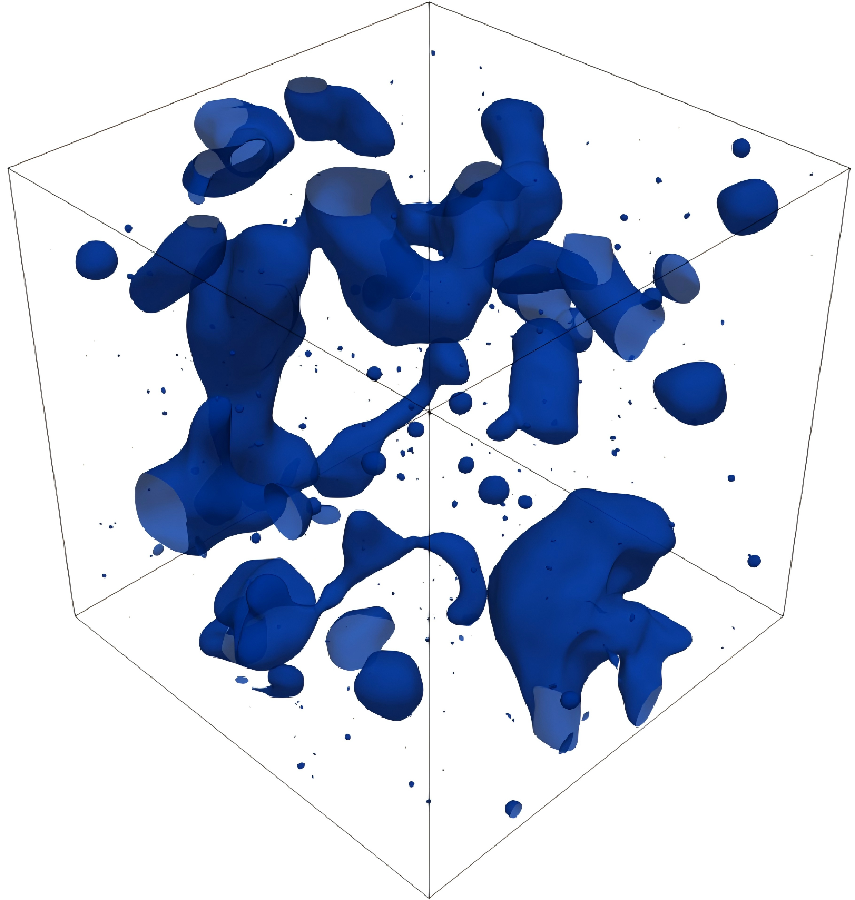

Description
Direct numerical simulation data of a liquid droplet breaking up in forced homogeneous isotropic turbulence at Weber number 15. The dataset provides volume-fraction, pressure, and velocity fields over 81 snapshots.
Quick Info
- Dataset link
- info.json
- Contributors: Shao, C., Luo, K., Yang, Y., & Fan, J
- Contact: 226159802@qq.com
- DOI
- License: CC-BY-4.0
- Grid: Nx=256
- Field location: cell-centered
- Samples / snapshots: 81
- Format: custom binary
- Size: 27.18 GB
- Case conditions: We=15;We=15
- Loading instructions: file format: custom binary